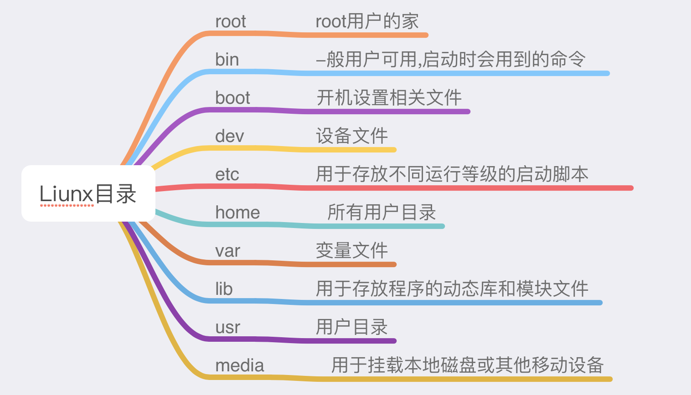
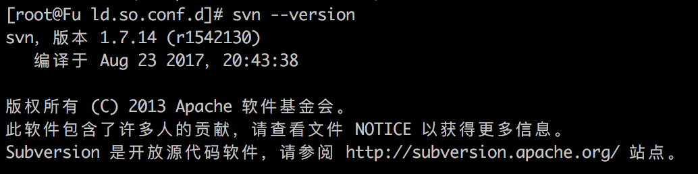

CentOS系统
防火墙的基本操作命令：
查询防火墙状态:
$ service iptables status
#停止防火墙:
$ service iptables stop
#启动防火墙:
$ service iptables start
#重启防火墙:
$ service iptables restart
#永久关闭防火墙:
$ chkconfig iptables off
#永久关闭后启用:
$ chkconfig iptables on
linux目录介绍

SSH免密登录:
vim /etc/ssh/sshd_config
prot 22 # ssh端口
PermitRootLogin yes #允许Root登录
PubkeyAuthentication yes #秘钥登录
PasswordAuthentication yes #密码登录
# 配置完成以后重启SSH服务
service sshd restart
cd /root/.ssh #配置允许登录公钥列表
vim authorized_keys #加入本机 /Users/apple/.ssh id_rsa.pub 一行一个秘钥 检查头部 SSH
Gogs Git服务安装
安装docker
$ sudo yum install docker
启动并加入开机启动
$ sudo systemctl start docker
$ sudo systemctl enable docker
拉取Github
$ docker pull gogs/gogs
启动gogs 浏览器访问:http://ip:8081
docker run --name=gogs -p 10022:22 -p 8081:3000 -v /home/gogs:/data gogs/gogs
Dock 官方手册
# Pull image from Docker Hub.
$ docker pull gogs/gogs
# Create local directory for volume.
$ mkdir -p /var/gogs
# Use `docker run` for the first time.
$ docker run --name=gogs -p 10022:22 -p 10080:3000 -v /var/gogs:/data gogs/gogs
# Use `docker start` if you have stopped it.
$ docker start gogs
Github新建仓库发布
echo "# test" >> README.md
git init
git add README.md
git commit -m "first commit"
git remote add origin https://github.com/fuuqiu/test.git
git push -u origin master
SVN服务安装
1.安装svn
$ yum -y install subversion
2.启动svn
$ svnserve -d -r /www/svndata
启动svn时以下异常
svnserve: error while loading shared libraries: libaprutil-1.so.0: cannot open shared object file: No such file or directory
3.将apr依赖包添加到共享库
查看共享库配置文件
$ more /etc/ld.so.conf``include ld.so.conf.d/*.conf
创建apr共享库配置文件
$ cd /etc/ld.so.conf.d/``vi httpd-apr.conf``/www/wdlinux/httpd-2.2.22/lib/ #路劲注意,是查询到lib级
更新共享库配置
$ ldconfig -v
4.检测是否安装成功
$ svn --version
结果为 
此时说明已将安装成功
5.启动svn
$ mkdir /var/svn #我这里把版本库放在了var目录下的svn文件夹，方便管理
$ svnadmin create /var/svn/apps #我这里将svn作为所有版本库的目录，并创建了一个名为apps的版本库
$ svnserve -d -r /var/svn/ #启动 这里先不要执行,带后面配置完成后执行该条命令`
6.配置当前的版本库
进入刚才创建的apps版本库的文件夹：cd /var/svn/apps，可以使用ll命令查看这个文件夹中有哪些文件，之后进入conf文件夹，命令cd conf/说明如下：
- svnserve.conf：svn服务综合配置文件。
- passwd： 用户名口令文件。
- authz： 权限配置文件。
7.修改passwd
在此文件中可以添加用户和对应的密码；打开passwd文件命令如下：
$ vi passwd #在其中加入如下的配置：
#formatusername=password
#user1=user1Pwd
#user2=user2Pwd
8.修改authz文件
在此文件可以定义权限组，分别分为测试组和开发组；命令如下
harry_and_sally = harry,sally
harry_sally_and_joe = harry,sally,&joe
developer=user1,user2
tester=user1
定义组的读写权限，定义在版本库上
@developer=rw
@tester=r
修改svnserve.conf
将以下几行的注释符号#去掉
anon-access = none #没有登录的用户不能访问
auth-access = write #登录的用户可以写入
password-db = passwd #密码文件为当前目录下的
passwd authz-db = authz #验证文件为当前目录下的authz
//服务器这句需要加上paaswd前缀,不同版本可能不尽相同
9.停止和启动svn
启动svn：
$ svnserve -d -r /var/svn/
查看svn是否启动（看是否有进程存在）:
$ ps -aux |grep svn
关闭svn：
$ kill -9 progressId
重启svn，为了增加svn的安全性，这里将svnm的默认端口3690改为6534。
#关闭svn服务
killall svnserve
#新的端口启动
svnserve -d -r /www/svndata --listen-port 6534
#当然，如果出于安全性的考虑，你还可以添加https的支持。这里就不再详述。
10.使用svn客户端
#svn客户端中使用
#svn://你的IP:端口/项目名称/” 进行项目的下载和管理等，当然你也可以通过命令行进行管理，这就见仁见智了。
#svn://你的IP:端口/项目名称/